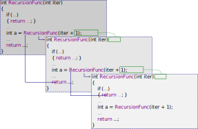
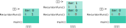

函数#
函数是C语言中一个特殊的执行单元。它可以被调用，传入一些值（参数），然后返回一个值。 所以如同运算符，函数可以用来返回值，也可以有副作用。迄今为止，我们所有代码的实现， 都是基于主函数的副作用。
一个函数主要由以下属性描述：
- 函数名
- 函数体
- 参数
- 返回值
一个例子#
我们之前学习过一个特殊的函数：主函数。并且将代码全部写入其中。现在我们要自己实现一个函数。
#include <stdio.h>
int Euclid(int lhs, int rhs)
{
int res = 0;
while (rhs > 0)
{
res = lhs % rhs;
lhs = rhs;
rhs = res;
}
return lhs;
}
int main(void)
{
int ans = Euclid(120, 123);
printf("%d", ans);
return 0;
}
打印的值是\(\gcd(120, 123) = 3\)。我们自己创建了一个名叫Euclid的函数，并调用它。
我们分别将120和123两个参数传入了这个函数，并返回了答案。
函数的定义#
函数定义
返回类型 标识符(形参列表) 复合语句
其中，形参列表是由,（逗号分隔）的声明项组成，或者是void。
声明项由类型和标识符构成，如同声明中一样。
函数定义定义了一个函数。函数的定义必须放在文件层级中，即不能放在其他函数中。
以下就是一个函数的定义：
int MyFunc(int x, int y)
{
return 0;
}
函数定义为当前文件定义了一个函数。它的作用范围是从这个定义开始，到文件末尾结束。 在文件中不能定义两个同名的函数。
形式参数（Parameter）#
函数参数列表中的每一项都是形式参数，简称形参。参数为函数指定了一些变量，
在函数外部给这些变量初始化，在函数体内部，这些变量可以被使用。
上面的例子中，x和y就是我们在函数中可以使用的变量。
形式参数的作用域是函数体。也就是说，离开了这个函数，其形式参数的声明也就无效了。 如果在其他地方重新声明同样的标识符，那就是新的定义了。
当然，在同一函数声明两个同名的参数是不可以的，这就是标识符相互冲突了。
如果函数没有形式参数，那么它的形参列表就是void，如主函数。
返回类型与返回语句#
返回语句
-
return;
-
return 表达式;
函数可以向外界返回一个值。这个值的类型由返回类型指定。当然，函数也可以什么都不返回，
这使得函数的返回类型是void。（这个函数可以执行它的副作用。）
函数的return语句中的表达式类型和返回类型必须一致，
或能够通过如同赋值的隐式转换转到返回类型。如果返回类型是void，那就只能使用return;。
return语句是函数返回的地方。当函数执行到return的时候，就会离开函数，返回它被调用的地方。
return的表达式的计算值就是返回的值。当然，如果这个函数被执行完了
（也就是执行到了这个函数函数体的右大括号}），程序也会返回。
Attention
对于非void返回类型的函数，其必须要有一个返回值，请确保函数一定会返回一个合适的值。
下面的例子是错误的：
int func(int x)
{
if (x > 3)
{
return x;
}
}
这个函数可能不执行return，这样得到的返回值是不确定的。
根据return语句被执行就会离开函数的特性，return语句也可以用来控制函数执行。
这就是return;对于拥有void返回类型的函数的作用。例如：
void LoopFunc(void)
{
int i = 1;
while (1)
{
if (i > 3)
{
return;
}
i++;
}
}
main函数的返回值具有什么样的意义？
main函数是由操作系统（或其他宿主）调用的。它的返回值标识了程序执行的状况。 如果程序执行没有错误，我们就让他返回0。其他的返回值表示程序执行有错误。
函数调用运算符#
函数调用运算符
函数名(实参列表)
其中，实参列表是由,（逗号分隔）的表达式组成，或为空。
注：若想让一个表达式组成完整语句，需要后附;分号。
函数调用（function call）指的就是让程序暂时离开当前函数，
走入我们指定的函数中去执行。
我们已经遇到过函数调用运算符，如我们一直在使用的格式化打印函数printf()。
函数调用运算符的结果是函数的返回值，其副作用是函数体的执行。
我们可以将函数调用运算符的结果为变量赋值，这样我们就储存了这个函数的返回值。 如：
int a = printf("%d");
不过也可以丢弃返回值，就像我们平时调用prinf()那样。
printf()的返回值是什么？
写出的字符数，或者当出现错误时返回负值。
实际参数（Argument）#
实际参数指在函数调用运算符中传入的值。在一次调用中， 实际参数为函数的形式参数进行初始化。 所以实际参数的个数和类型必须与形式参数一一对应，如下面的程序：
float Add(int lhs, float rhs)
{
return lhs + rhs;
}
int main(void)
{
float ans = Add(1, 0.8);
return 0;
}
在Add(1, 0.8)这个调用中，我们分别为lhs初始化为1，给rhs初始化为0.8，
然后进入Add这个函数。
对于形参列表为void的函数，对应实参列表为空。如：要调用int VoidParam(void)，
只需写VoidParam();
值传递（Pass By Value）#
由于我们在函数调用中用实际参数初始化了形式参数，也就是说，我们把实际参数的值复制了一份， 给了形式参数。请看以下的例子：
#include <stdio.h>
void swap(int lhs, int rhs)
{
int temp = lhs;
lhs = rhs;
rhs = temp;
}
int main(void)
{
int a = 1, b = 2;
swap(a, b);
printf("%d %d", a, b);
return 0;
}
这样写法常见于想要使用函数来交换两个变量值的人。但是很明显这个程序的输出是1 2， 也就是说这样并不能交换两个变量的值。
其实稍微想想就能明白，在swap()函数中，lhs和rhs和原来的a和b没有任何关系。
只是swap(a, b);语句中a和b表示两个值，为swap()函数的两个变量初始化。
像这样，用值传入函数的机制，叫值传递机制。 与之相对的是引用传递（pass by reference）机制， 也就是真正的用形式参数去代表实际参数的机制。 C语言中函数调用采用的都是值传递机制1。
递归（Recursion）#
函数可以在其内部调用自己吗？当然可以！函数调用自己就叫递归。下面就是一个例子：
void RecursionFunc(int iter)
{
if (iter > 10)
{
return;
}
printf("*");
RecursionFunc(iter + 1);
}
这个函数在自己内部调用自己，每次调用，
就会将iter + 1的实际参数初始化新一轮调用的形式参数iter。
也就是说，这个函数的iter参数每一次调用都会增加1。
当iter大于10时，函数返回，不再执行新的递归。
下图简单地描述了递归的过程：

Attention
和循环一样，递归亦不能无穷递归。要设置一定条件，如果条件满足就返回（或其他方法）， 阻止新的自我调用。由于每一次函数调用都要分配内存空间（具体来说，是栈的空间）， 如果递归超过一定次数，就会导致栈溢出（stack overflow）。
以下的程序能帮你更好的理解递归：
#include <stdio.h>
void RecursionFunc(int iter)
{
printf("Line 1 of RecursionFunc. iter is %d.\n", iter);
if (iter > 3)
{
printf("Line 4 of RecursionFunc. Return. iter = %d. No more calls.\n", iter);
return;
}
printf("Line 7 of RecursionFunc. Call RecursionFunc(%d + 1).\n", iter);
RecursionFunc(iter + 1);
printf("Line 9 of RecursionFunc. Back form the call. iter is %d now.\n", iter);
printf("Line 10 of RecursionFunc. Return.\n");
}
int main(void)
{
RecursionFunc(0);
return 0;
}
以下是这个函数的输出：
Line 1 of RecursionFunc. iter is 0.
Line 7 of RecursionFunc. Call RecursionFunc(0 + 1).
Line 1 of RecursionFunc. iter is 1.
Line 7 of RecursionFunc. Call RecursionFunc(1 + 1).
Line 1 of RecursionFunc. iter is 2.
Line 7 of RecursionFunc. Call RecursionFunc(2 + 1).
Line 1 of RecursionFunc. iter is 3.
Line 7 of RecursionFunc. Call RecursionFunc(3 + 1).
Line 1 of RecursionFunc. iter is 4.
Line 4 of RecursionFunc. Return. iter = 4. No more calls.
Line 9 of RecursionFunc. Back form the call. iter is 3 now.
Line 10 of RecursionFunc. Return.
Line 9 of RecursionFunc. Back form the call. iter is 2 now.
Line 10 of RecursionFunc. Return.
Line 9 of RecursionFunc. Back form the call. iter is 1 now.
Line 10 of RecursionFunc. Return.
Line 9 of RecursionFunc. Back form the call. iter is 0 now.
Line 10 of RecursionFunc. Return.
在之前的例子中我们注意到：随着函数一层层返回，iter的值一次次减一。
当然，并不是因为哪里有减一的计算，而是iter变量在每一次返回之后，变成了那一层原来的值。
下面有一个更详细的例子：
#include <stdio.h>
void RecursionFunc(int iter)
{
int i = 1;
printf("Enter function iter is %d. i is %d.\n", iter, i);
i = iter;
printf("Assign: i = iter. i is %d now.\n", i);
if (iter > 3)
{
return;
}
RecursionFunc(iter + 1);
printf("Return from function. i is %d.\n", i);
}
int main(void)
{
RecursionFunc(0);
return 0;
}
运行的结果是：
Enter function iter is 0. i is 1.
Assign: i = iter. i is 0 now.
Enter function iter is 1. i is 1.
Assign: i = iter. i is 1 now.
Enter function iter is 2. i is 1.
Assign: i = iter. i is 2 now.
Enter function iter is 3. i is 1.
Assign: i = iter. i is 3 now.
Enter function iter is 4. i is 1.
Assign: i = iter. i is 4 now.
Return from function. i is 3.
Return from function. i is 2.
Return from function. i is 1.
Return from function. i is 0.
从上面我们可以看到：当程序进入函数时，其内部定义的变量会重新定义， 和调用者的同名变量没有关系，即使它们是同一个函数。当程序从函数返回时， 其内部定义的变量也会恢复到调用前的状态一样， 因为我们目前所有的改动都是在新函数的新变量中进行的，调用者的变量没有经历改动。
什么是栈？它和函数调用有什么关系？
通常，编译器使用栈这种数据结构，来帮我们管理函数调用中，所有函数内部变量的内存。 而且这个栈可以帮助程序区分递归中不同调用的同名变量， 并保存之前调用中所有内部变量的值。如下图所示：

函数声明和函数类型#
函数声明项
返回类型 标识符(形参列表)
其中，形参列表是由,（逗号分隔）的声明项组成，或者是void。
声明项由类型和标识符构成，或只有类型。
注：若想让一个声明项组成完整声明，需要后附;分号。
函数声明声明了一个函数，如下所示：
int MyFunc(int a);
函数声明如同变量声明，给一个标识符指定了一个类型。由函数声明指定的类型就是函数类型。 函数类型是由以下两部分组成的复合类型：
- 参数类型
- 返回类型
函数声明也叫函数原型（prototype）。之所以叫原型，是因为它给出了参数类型和返回类型， 但是没有给出实现和参数名。
Attention
不能声明main函数！
迄今为止，我们接触到的main函数的原型是:
int main(void)
当然，main函数的原型不止这一种。
如同变量声明，函数声明同样由自己的作用域。通常我们和函数定义一样，放在文件层级， 这样它的作用域就是文件作用域，从这个声明开始，到文件末尾结束。
如同变量声明一样，不能声明两个同名函数。但是函数定义可以出现在同名函数声明的作用域中， 不过需要它们的类型是一致的。
函数调用运算符必须在函数声明的作用域中或函数定义的作用域中， 这样这个运算才能找到这个标识符。换言之，可以先声明一个函数，在调用之后的部分再定义，如：
int Func(int);
int main(void)
{
Func(0);
return 0;
}
int Func(int param)
{
return param;
}
Attention
在给出了函数的声明之后，请你确保给出函数定义。
如果只有函数声明而无函数定义，那么编译器（准确来说是链接器）会报错：
Error
无法解析的外部符号XXX
链接器负责查找函数声明，并将他和函数定义链接在一起。在编译阶段，这份代码没有任何错误。 而在链接阶段，链接器找不到这个函数的定义。在经过编译之后， 编译器很可能给函数的名字增加了修饰符。所以，通常这种错误比较隐蔽，不易查找。
声明和定义的区别
声明给出了一个标识符的类型，而定义给出了标识符的具体内容（如函数）。 而对于变量来说，变量的声明就是变量的定义。
对于两个互相调用的函数函数来说，函数声明是必要的，因为总有一个函数要在另外一个函数之后定义。 如下的例子：
#include <stdio.h>
void Ping(int);
void Pong(int iter)
{
printf("Pong\n");
Ping(iter);
}
void Ping(int iter)
{
if (iter > 3)
{
return;
}
printf("Ping\n");
Pong(iter + 1);
}
int main(void)
{
Ping(0);
return 0;
}
标准库头文件包含了一些函数的声明。
我们可以通过#include指令将这些声明包含到我们的文件中。
如<stdio.h>含有printf()的声明。
这些函数的定义在别处，编译器会把这些函数的定义链接进来。
全局变量#
(TODO)
-
我们会学习一种使用指针去实现引用传递的方法。 当然在C中没有真正意义上的引用传递。 ↩